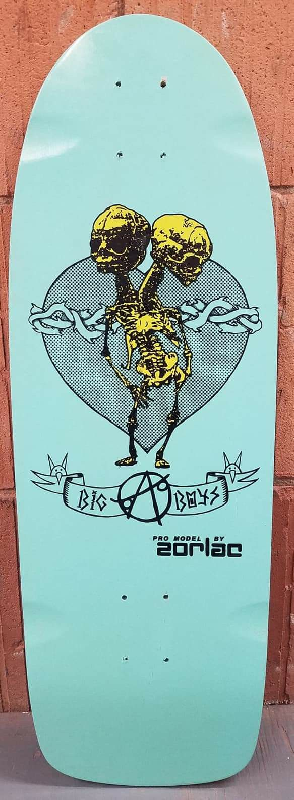
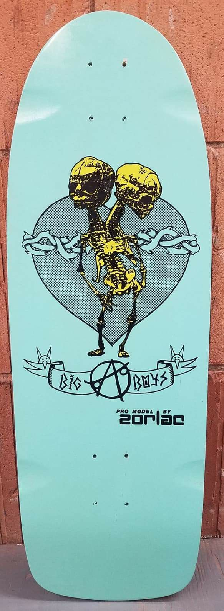
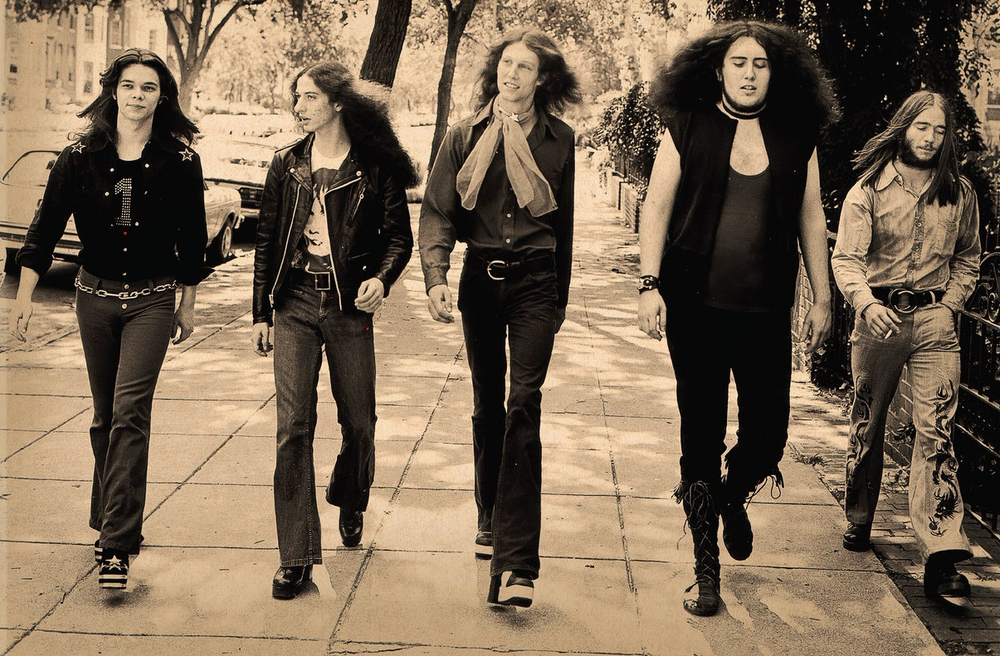

For a relaxing time grind metal on cement!
Möney - Hegemoney (2025)


Super cool new punk from the UK! A future classic? Pic live from their skate spot!
Big Boys - Fun Fun Fun (1982)

 

One of the most legendary diy punk bands of all time! These Austinites were all about skating for fun!
Slimy Member - Ugly Songs for Ugly People (2017)

A punk classic now, these Dallas rockers made a killer album! All the songs are good so i always listen to it from beginning to end!
Satanic Togas - Digital World (2023)

A great little ep from the never-ending youth scenes of skating, bands, beer and weed!
Tuxedomoon - No Tears (1978)

A timeless classic! Bands like this and Suicide were hated by everyone and now they're loved! Just shows to go ya, be yourself! Resist algorithm-flattened culture!
Группа Альянс - На заре (song 1987)


What can i say lol, doesn't get much cooler than this! Check out hat guy!
Enciero - Doomsday Still Bleeds Red (2024)

A massive, massive metal-punk album from down under! Tony says all the songs on this albuma are "grrrrrrreat!"
Pentagram - Demo (1973)
Sweet stoner rock! I guess back then a demo was like today's full length lp! I can barely get 2 minutes of music written and recorded lol
Tonstartssbandht - An When (2009)

Great diy psychadelic most people missed! Here's a cool song I like, plus a little taste of the glory from a show in Russia!
No Future - Mirror (2024)

Another great aussie band and these guys really get after it! Singer sounds like she means what she's sayin!
Street Sweeper - Don't Wait (2024)

Another killer ep from Street Sweeper! They got more poppy but still got the edge baby!
Dead Moon - Unknown Passage (1989)

Wouldn't be a diy punk blog without lotsa Dead Moon! Is it possible to get more raw and real than this? They're like the old blues records!
Liquor Store - We Buy Gold (song 2021)

One of the last recorded songs from these new york city street rockers! Will they ever return?
AC/DC - The Massachusetts Massacre (2021)

Here's a real treat! Live AC/DC at their best! It was 'unearthed' a few years ago, aussie kids went bonkers!!